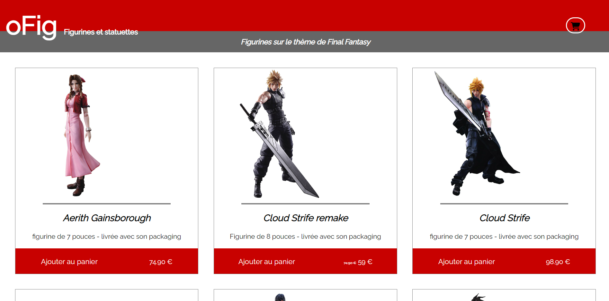
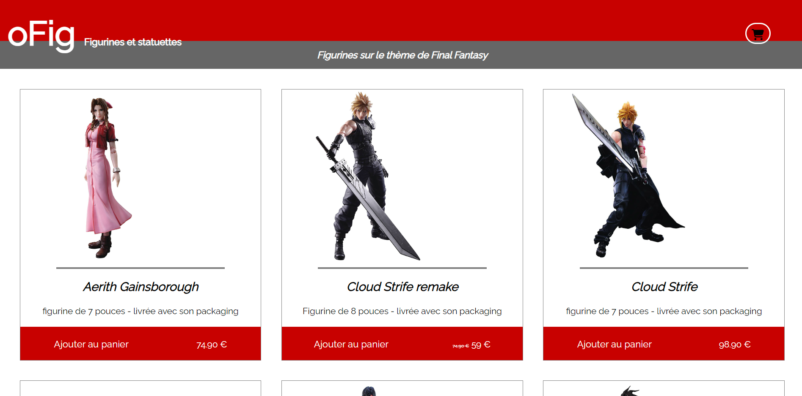
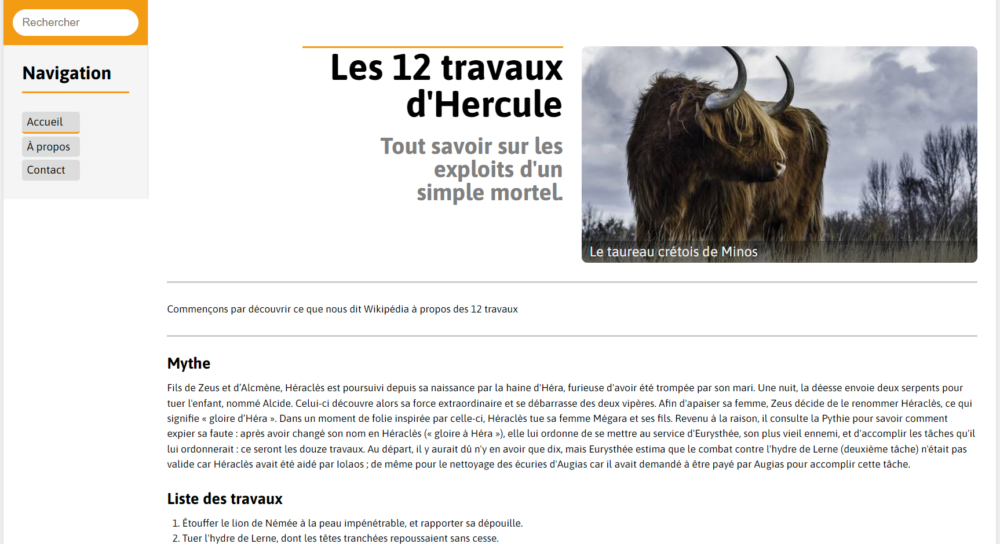

school project
 

projet O'fig
reconstitution d'un site de commerce avec des figurine mise en avant. ce projet a été réalisé pour travailler le display-flex et l'initiation au formulaire dans la section panier et le retravaillé par la suite coté back-end.

click here to visite website

projet Hercule
reconstitution d'un site sur les 12 travaux d'hercule. Ce projet a été réalisé pour travailler les positions relative et absolute ainsi que les nav bar. Le display-grid a également été travaillé pour les catégorie en bas de page.
click here to visite website

projet Trip O'dvisor
reconstitution d'un site de voyage. Ce projet a été réalisé pour travailler le javaScript comme par exemple les addEvents au clique ainsi que les ajouts de classes pour le theme sombre. J'ai également ajouter l'interdiction d'utiliser des mail jetable dans la news letter.